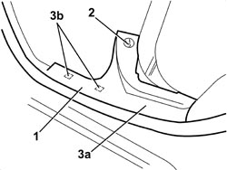

7040L44 REAR DOOR RUNNING BOARD (ONE), LEFT OR RIGHT - R.R.
- Path
- Procedures > 70 FITTINGS > 7040 BODY INTERIOR FITTINGS AND TRIM > 7040L CABIN FLOOR COVERING > 7040L44 REAR DOOR RUNNING BOARD (ONE), LEFT OR RIGHT - R.R.
- Kind
- repair procedure (removal / refitting; the operation number is the code)
- Applies to
- all engines; all production periods
- Interactive page
- https://sloeber94.github.io/elrnDB/alfa/159/en/#/939011275
Applies to: all engines; all production periods
 Removing
Removing
 Refitting
RefittingOp. 7050A20 ONE-PIECE REAR SEAT CUSHION - R.R.
1. Release the door housing seal in the area of the running board.
2. Undo the bolt.
3. Remove the running board (3a) releasing the internal retainers (3b).

Applies to: all engines; all production periods
Refitting
Removing- Check that the running board is not damaged.
- Position the running board and attach the inner retainers.
- Tighten the bolt.
- Fit the door housing seal.
Topics linked from this page (1)
Topics that link to this page (29)
- 5505C28 ENGINE COMPARTMENT AND A.B.S BUILT-IN WIRING - R.R.
- 5505C41 PASSENGER COMPARTMENT WIRING - R.R
- 5570T27 AERIAL SUPPORT - R.R
- 5570T31 AERIAL COAXIAL LEAD - R R
- 5580C40 SIDE BAG SENSOR (ONE), LH OR RH - R.R.
- 5580C50 WINDOW BAG MODULE (ONE) LH OR RH - R.R
- 5580H16 REAR BUZZER OF PARKING OBSTICLE DETECTION DEVICE R R
- 5580T40 BOSE SOUND SYSTEM SUBWOOFER - R.R.
- 7010A14 REAR SIDE DOOR - ADJUST CENTERING AND MOULDING - INCLUDES ADAPTATION OF HINGES AND SEALS ON DOOR COMPARTMENT
- 7010A24 REAR SIDE DOOR HINGES (BOLTED) - REPAIR OR REPLACE WITH DOOR REMOVED
- 7030B12 SLIDING ROOF (ASSEMBLY) - R+R
- 7030B40 DRAINAGE CHANNEL - R R
- 7030B50 SUN ROOF SLIDING GUIDE (ONE), LH OR RH - R.R
- 7035B14 REAR WINDOW GLASS - R.R INCLUDES CLEANING HOUSING
- 7040H10 ROOF PANEL LINING - R.R.
- 7040H16 ROOF PANEL LINING FOR VERSIONS WITH SUN ROOF - R.R
- 7040H36 CENTRE PILLAR LOWER ELEMENT (ONE), LEFT OR RIGHT - R.R
- 7040H38 CENTRE PILLAR UPPER ELEMENT (ONE), LEFT OR RIGHT - R.R
- 7040H42 REAR PILLAR TRIM (ONE), LEFT OR RIGHT- R.R
- 7040H80 REAR PARCEL SHELF - R.R.
- 7040L18 PASSENGER COMPARTMENT FLOOR REAR CARPET - R.R.
- 7050A10 REAR SEAT - R+R
- 7050A19 REAR SEAT BACKREST - R.R
- 7050A42 REAR BACKREST CATCH DEVICE (ONE) - R+R
- 7050A47 SIDE PANEL ONE OF REAR SEAT SQUAB LH OR RH R R
- 7050D30 TRIM FOR REAR SEAT BACKREST - R.R.
- 7065A10 FRONT SEAT BELT (ONE) LEFT OR RIGHT - R.R.
- 7065B10 REAR SEAT BELT (ONE), LEFT OR RIGHT - R.R.
- 7065B18 CENTRE REAR SEAT BELT - R.R.